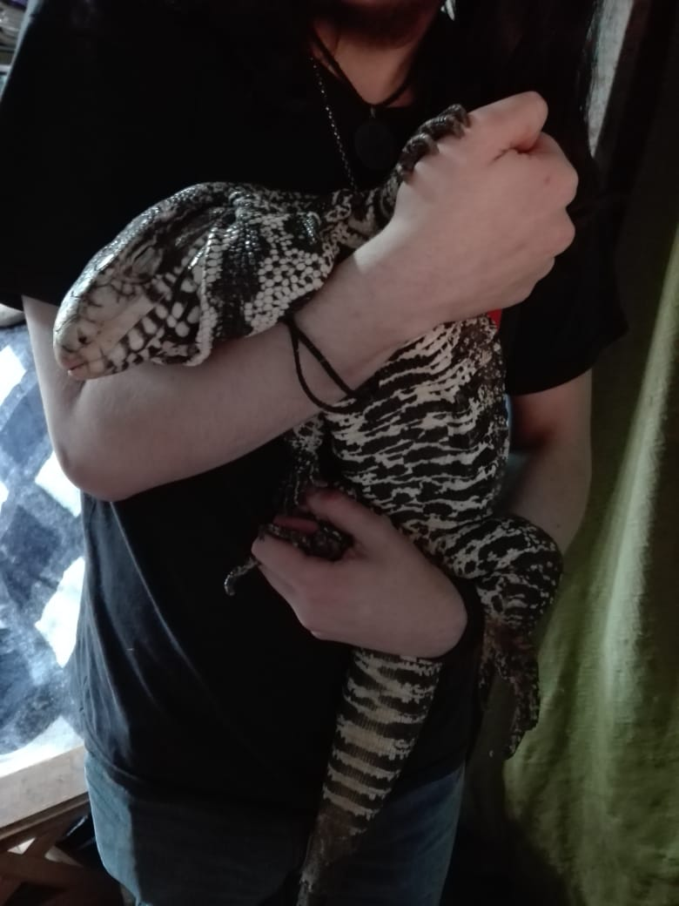
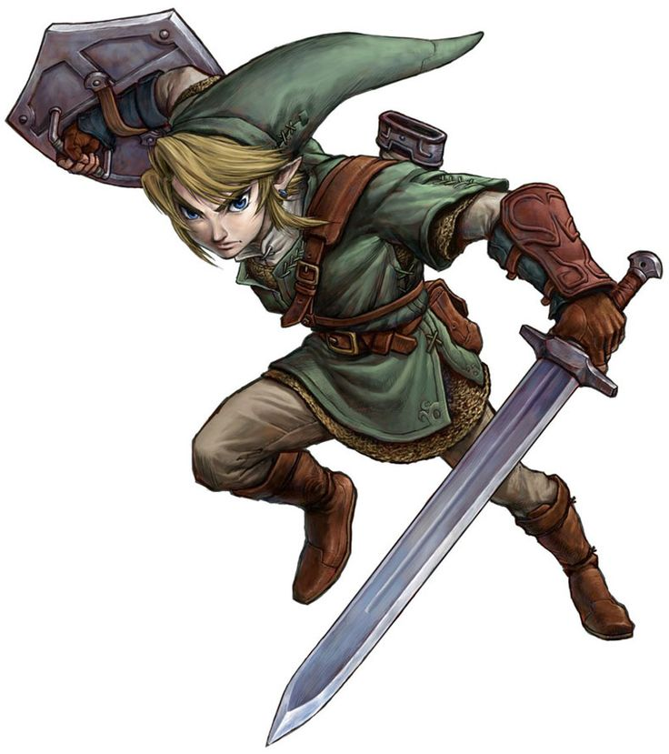

Sobre mí: ¿Quién soy?
Mucho gusto, mi nombre es Rafael Gómez, alumno de la UNPAZ en la carrera "Producción y Desarrollo de Videojuegos".
También conocido como Rinku Kanji por mis fieles 4 seguidores en redes sociales, soy un artista mediocre que busca hacerse medianamente conocido.
Me gusta el vocaloid, y claramente los videojuegos (siendo las sagas *The Legend of Zelda* y *Monster Hunter* mis favoritas).
Mi banda favorita es The Beatles y mi película favorita es *Koe no Katachi* (*The Shape of Voice*, mal adaptada como "A Silent Voice"). Tengo 23 años, me recibí de un taller de dibujo de dos años del cual olvidé la mayoría de las cosas, nunca tuve un trabajo que durara más de un mes y eso es todo lo que puedo decir sobre mí, nada verdaderamente interesante o relevante.
¿Por qué tengo la foto de un lagarto?
Hace muchas lunas atrás, bromeando con unos amigos en línea, le saqué una foto a mi lagarto mascota diciendo "face reveal" y, desde ahí, se hizo "canon" que ese soy yo.
Mi lagarto desafortunadamente ya no se encuentra con nosotros, así que sigo con la broma muchos años después por respeto a su espíritu.
Le puse la peluca de Miku como otra broma, y como aún me sigue dando gracia, sigo usando esa foto de perfil a pesar de que el lagarto (Rango) ya no esté.
¿Qué significa "Rinku Kanji"?
Rinku viene del nombre de "Zelda hombre", el protagonista de *The Legend of Zelda*, Link, solo que escrito de la forma en la que los japoneses lo pronuncian.
Kanji viene de "Kaji", el apellido de mi personaje favorito de *Evangelion*, pero un amigo solía decirme "Kanji" para molestarme. Le seguí el juego al encontrarlo gracioso. Este es el nombre que decidí crear para mi alter ego/seudónimo/nombre artístico en redes sociales: fácil de recordar y reconocible.